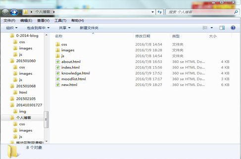
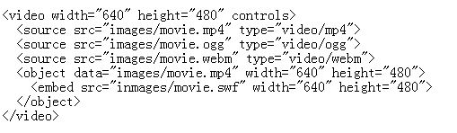
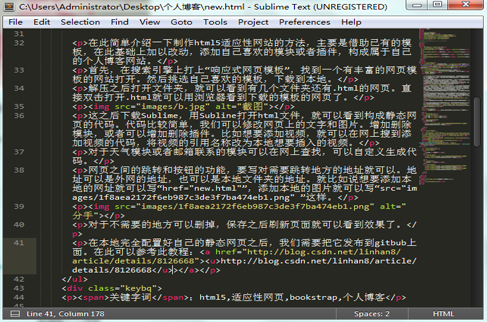

您当前的位置：首页 > 个人博文 > 博文网站首页博文
教你制作适应性网页的个人博客
发布时间：2016-07-08编辑：金雪航
在此简单介绍一下制作html5适应性网站的方法，主要是借助已有的模板，在此基础上加以改动，添加自己喜欢的模块或者插件，构成属于自己的个人博客网站。
首先，在搜索引擎上打上“响应式网页模板”，找到一个有丰富的网页模板的网站打开。然后挑选自己喜欢的模板，下载到本地。
解压之后打开文件夹，就可以看到有几个文件夹还有.html的网页。直接双击打开.html就可以用浏览器看到下载的模板的网页了。

这之后下载Sublime，用Subline打开html文件，就可以看到构成静态网页的代码。代码比较简单，我们可以修改网页上的文字和图片。增加删除模块，或者可以增加删除插件。比如想要添加视频，就可以在网上搜到添加视频的代码，将视频的引用名称改为本地想要插入的视频。

网页之间的跳转和按钮的功能，要写对需要跳转地方的地址就可以。地址可以是外网的地址，也可以是本地文件夹的地址。就比如说想要添加本地的网址就可以写“href="new.html"”，添加本地的图片就可以写“src="images/1f8aea2172f6eb987c3de3f7ba474eb1.png" ”这样。

对于不需要的地方可以删掉，保存之后刷新页面就可以看到效果了。
在本地完全配置好自己的静态网页之后，我们需要把它发布到gitbub上面。在此可以参考此教程：http://blog.csdn.net/linhan8/article/details/8126668>
关键字词：html5,适应性网页,bookstrap,个人博客